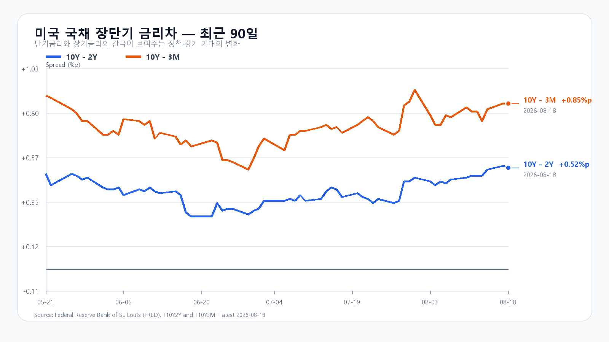

오늘의 한 문장
미국 반도체 급락이 국내 메모리 장전 가격으로 전달됐습니다. 다만 DRAM 현물은 무너지지 않았습니다. 장 초반 6,600선을 지키고 전일 저가 6,788.78을 되찾는다면 낙폭 과대 반등이 가능하지만, 두 선을 모두 놓치면 방어가 먼저입니다.
7,216에서 6,869로 밀린 장이 남긴 것
KOSPI는 8월 18일 7,127.77에 출발해 7,216.62까지 올랐지만 6,869.83에 마쳤습니다. 외국인은 현물을 914억원 순매수했고 기관은 7,951억원 순매도했습니다. 외국인 수급만 보고 하단을 판단할 수 없다는 점이 드러났습니다.
KODEX 레버리지는 110,465원에 마감했습니다. 장중 고점은 123,110원, 저점은 107,875원으로 하루 안에 15,235원이 움직였습니다. 오늘은 107,875원 회복과 102,000원 방어를 차례로 봅니다.
| 항목 | 확정값 | 오늘 기준 |
|---|---|---|
| KOSPI | 6,869.83 | 6,600 방어 · 6,788.78 회복 |
| KODEX 레버리지 | 110,465원 | 102,000원 방어 · 107,875원 회복 |
| 외국인·기관 현물 | +914억원 · -7,951억원 | 기관 매도 둔화와 외국인 방향 |
| 삼성전자·SK하이닉스 NXT | 254,000원(-5.40%) · 1,556,000원(-6.38%) | 장전 낙폭 축소 여부 |
AI·반도체가 함께 밀렸다
S&P500은 0.69%, Nasdaq은 1.30% 내렸습니다. QQQ는 1.69%, TQQQ는 5.07% 하락했습니다. 반도체 낙폭은 더 컸습니다. SOXX는 4.96%, SMH는 4.09% 밀렸고 Micron은 7.02%, AMD는 4.27%, Broadcom은 3.21%, Nvidia는 2.34% 내렸습니다.
특정 기업 하나의 악재보다 AI 투자비가 이익으로 돌아오는 속도와 높은 주가에 대한 의심이 바스켓 전체를 눌렀습니다. EWY도 8.06% 하락했지만 전일 한국장 조정을 뒤늦게 반영한 부분이 큽니다. 오늘 낙폭에 그 수치를 그대로 한 번 더 더할 수는 없습니다.
메모리 가격은 아직 꺾이지 않았다
TrendForce가 8월 18일 공개한 DDR5 16Gb 현물 평균은 52.733달러로 보합이었습니다. DDR4 16Gb는 89.427달러로 0.55% 올랐고 DDR4 8Gb는 보합이었습니다.
주가가 급락했어도 메모리 현물 가격은 버티고 있습니다. 오늘 약세를 업황 붕괴보다 높은 밸류에이션과 쏠림의 조정으로 보는 이유입니다. 다만 장 초반 매물을 흡수하려면 현물 가격보다 정규장 외국인·기관 수급이 필요합니다.
금리는 내려도 4.7%대, 유가는 91달러대
미국 10년물은 4.72%에서 4.70%로 소폭 내렸습니다. 10년-2년 금리차는 0.52%포인트, 10년-3개월 금리차는 0.85%포인트입니다. 수입물가는 0.4% 하락했지만 산업생산은 0.2% 늘었고 주택착공은 12.4% 감소했습니다.
Brent는 91.02달러입니다. 장기금리가 더 오르지는 않았어도 4.7%대이고, 유가도 한국 증시에 부담스러운 수준입니다. 달러/원은 1,413.50원, Nasdaq100 선물은 07:44 KST 기준 0.18% 하락했습니다. 둘 다 장전 메모리 약세를 되돌릴 신호는 아직 아닙니다.

오늘 밤에는 FOMC 의사록이 나온다
7월 FOMC 의사록은 한국시간 8월 20일 오전 3시에 공개됩니다. 오늘 한국장 마감 뒤 일정이어서 장중 직접 재료는 아닙니다. 다만 미국 금리와 달러/원, 다음 한국장 출발점을 바꿀 수 있습니다.
오늘의 시나리오
KOSPI 6,600~6,899
장 초반 6,600선까지 밀린 뒤 메모리주가 낙폭을 줄입니다. 전일 저가 6,788.78을 회복하면 6,700선 중심으로 모일 수 있습니다.
KOSPI 6,300~6,599
메모리주 장전 낙폭이 이어지고 기관과 외국인이 함께 매도합니다. 6,600을 회복하지 못하면 변동성이 더 커집니다.
KOSPI 6,900~7,149
메모리 현물의 견조함이 부각되고 외국인 매수가 유입됩니다. 전일 종가를 되찾고 6,900 위에서 버텨야 합니다.
1차 지지 102,000원 · 반등 기준 107,875원 · 1차 저항 110,465원 · 강한 회복 119,500원.
전체 장중 경로는 KOSPI 6,200~7,200으로 봅니다. 오늘 대응 점수는 공격 15 · 관망 45 · 방어 40입니다.